-
1310-1352
Domnia lui Basarab I.
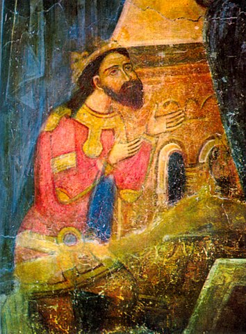 -
1330
Din cauza neînțelegerilor în privința Banatului de Severin, are loc confruntarea de la Posada dintre Basarab și regele Ungariei, Carol Robert de Anjou. Basarab câștigă bătălia.
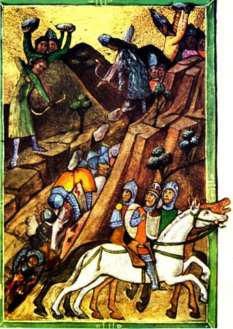 -
1359
Descălecatul lui Bogdan de Maramureș; acesta se revoltă împotriva Coroanei Maghiare și înlătură suzeranitatea maghiară asupra Moldovei.
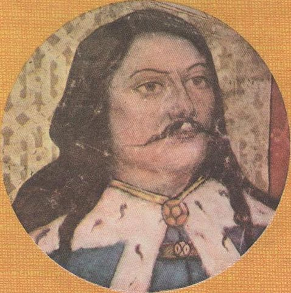 -
1386-1418
Domnia lui Mircea cel Bătrân.
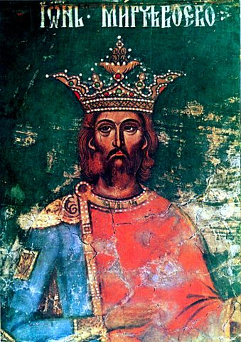 -
1392-1394
Domnia lui Roman I: Moldova devine stat riveran Mării Negre.
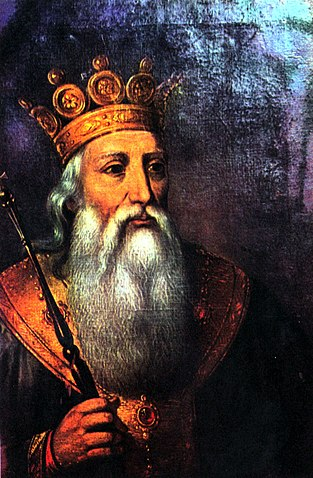 -
1394/1395
Bătălia de la Rovine; Mircea învinge expediția condusă de otomani.
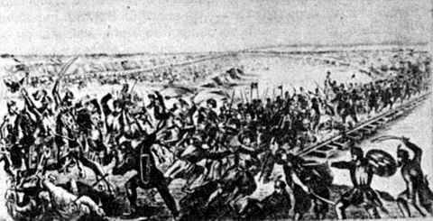 -
1402
Mircea se implică în lupta pentru tron dintre fii sultanului Baiazid, capturat de mongoli.
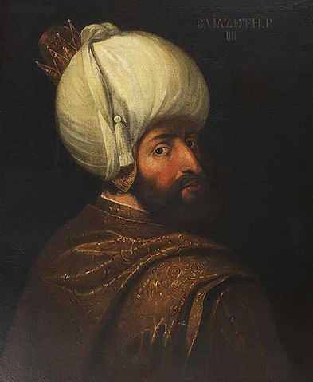 -
1441-1456
Domnia voievodului Ioan de Hunedoara (Iancu de Hunedoara).
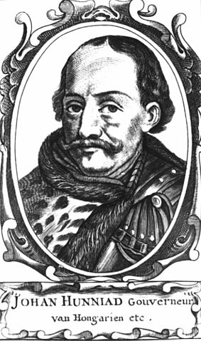 -
1457-1504
Domnia lui Ștefan cel Mare.
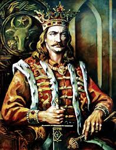 -
1462
Atacul de noapte de la Târgoviște organizat de Vlad. Este trădat de boieri, Radu cel Frumos preia domnia, Vlad se auto-exilează in Transilvania și este închis până în 1475 în Ungaria din ordinul regelui Matia Corvin.
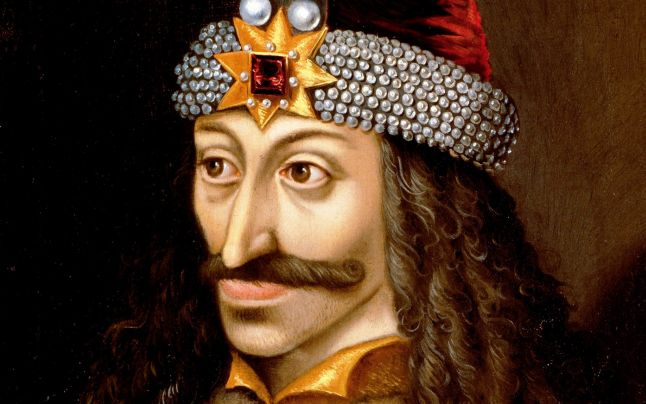 -
1476
Bătălia de la Războieni: Ștefan pierde bătălia în fața otomanilor.
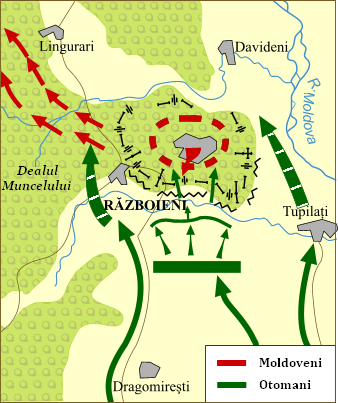 -
1476
Ultima domnie a lui Vlad Țepeș; este ucis într-un complot.
-
1504
Ștefan cel Mare moare.
-
1593-1601
Domnia lui Mihai Viteazul.

-
1595
Bătălia de la Călugăreni; Mihai obține victoria în fața armatei otomane conduse de Sinan Pașa, dar turcii ocupă ulterior Bucureștiul și Târgoviștea.
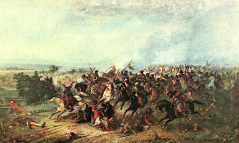 -
1598
La Mănăstirea Dealu, Mihai încheie tratatul de alianță cu împăratul habsburgic Rudolf al II-lea.
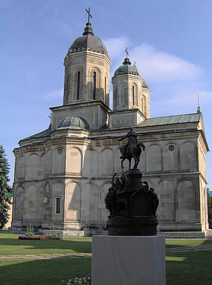 -
1601
Mihai Viteazul este asasinat de către generalul Basta pe Câmpia Turzii.
-
...